- Nanolab
Carbon Nanotubes Based Supercapacitors for Autonomous IoT Sensing Nodes
Jérémy Jayet
Supervisors:
Dr. Clara MoldovanDr. Francesco Bellando
Professor:
Adrian IonescuContext of the project
Nowadays, there is an increasing need for electrical power storage options with a particular focus for environment friendly devices.
In parallel, increasing number of connected devices, especially smart sensors for the IoT. Maintenance of remote networks with high number of nodes is difficult and costly therefore long lifetime and autonomous operations are strongly desired.
Supercapacitors are a promising option for various applications such as: + Energy buffer in electric vehicles + Energy source for smart sensors + Energy buffer and storage in smart grid systems
Project goal
This work includes itself in an ambitious project aiming to develop a new generation of supercapacitors.
The desired properties are:
- High energy density
- High power density
- Environment-friendly fabrication, in particular based on abundant and non-toxic materials
- Low-cost
The application of these devices in IoT sensors is investigated.
Plan of the project
Starting of the project
Review of the litterature on supercapacitors and carbon nanotubes growth.
Characterization of the current samples. Electrical parameters of the Fe-Al2O3 stack are measured.
Research and development of new processes of fabrication.
Investigation of the harvesting platform and its properties.
Different process flows are proposed.
Francesco starts the microfabrication of the samples starts in the CMi cleanroom.
Following different experiment design, the harvesting platform is characterized.
The demonstration sensor node is characterized.
The report is written.
Presentation
We start planning the next step of this project, based on this work.
Supercapacitors principle
Electrical double layer capacitors
Electrical double layer capacitors principle is based on non-Faradaic charge transfer.
\[ C = \epsilon \frac{A}{d} \]They benefit from: + a large surface area (activated carbons, CNTs), + an extremely thin double-layer distance (few Å).
Supercapacitors principle
Electrochemical pseudocapacitance
Electrical energy stored through reversible Faradaic redox reactions. Magnitude of this effect exceed the effect of double layer capacitance (up to a factor 100 was reported).
Supercapacitors properties
Advantages: + Very high cycling stability and long lifetime (>10'000 cycles for most commercial devices). + High power density + Some devices are made with with environment-friendly materials Current issues: + Low voltage + Low energy density + Most devices use toxic electrolyte
Carbon nanotubes supercapacitors
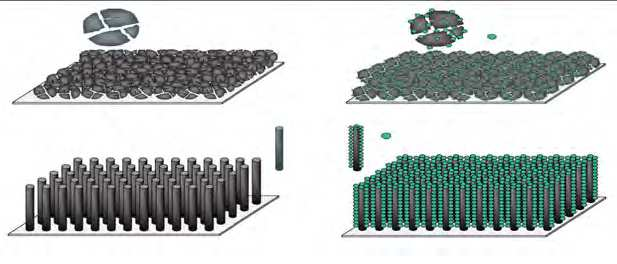Test
C
Test
Novel approach for carbon nanotubes based supercapacitors
Two major improvements are explored in this project:
- Geometry optimization of the device
- New fabrication processes with horizontal carbon nanotubes
Process 1
Horizontal growth of CNTs on Al2O3 structures
Process based on the method developed by Guerin et al.
Advantages:
- Already done in CMi.
- Low resistivity (1.75 m$\Omega$cm)
Disadvantages:
- Not easily scalable (problem with Al2O3 deposition)
- Not lowest contact resistance ($45\cdot10^{-3}$$\texttt{m}\Omega\texttt{cm}^2)$
Process 1
Silicon test wafers stock-out
TiN sputtering 100 nm
Al2O3 sputtering 300 nm / 1um
TiN sputtering 100 nm
PR coating
Photolithography
TiN and Al2O3 etching (IBE)
PR stripping
Fe deposition
CNTs growth
Process 1
Microfabrication
+ Steps 1 to 9 were conducted (no CNTs growth). + Sputtering is very slow and is a limiting factor for scalability. + IBE of Al2O3 is difficult with respect to PR.
Process 2
Horizontal growth of CNTs on coated Si structures
During the growth of vertical CNTs, horizontal growth on the edge of the wafer occured. From this phenomenon, horizontal CNTs structures could be fabricated.
Process 2
Horizontal growth of CNTs on coated Si structures
Coating of the horizontal surfaces could be achieved by two means with IBE: 1. Fe layer is the top layer and this layer is removed with IBE 1. Al2O3-Fe stack is etched with IBE and redeposits on the walls The process flow for this second option is shown on next slide.
Process 1
Horizontal growth of CNTs on coated Si structures
Advantages:
- Simple in-situ process
- Scalable
Disadvantage:
- New process which feasibility and characteristics were not demonstrated yet.
Process 2
 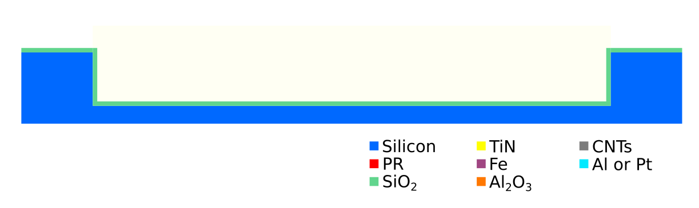
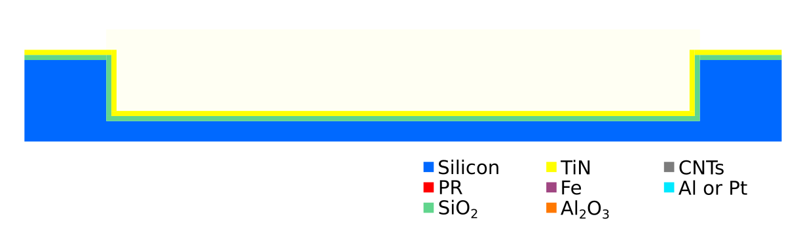
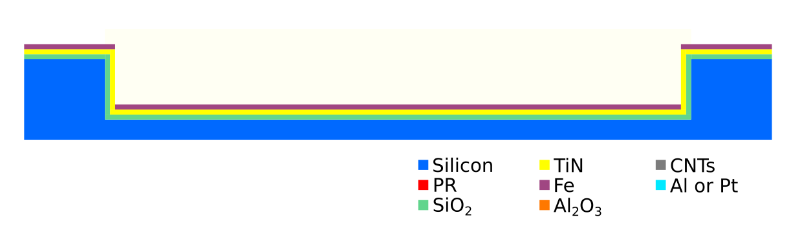
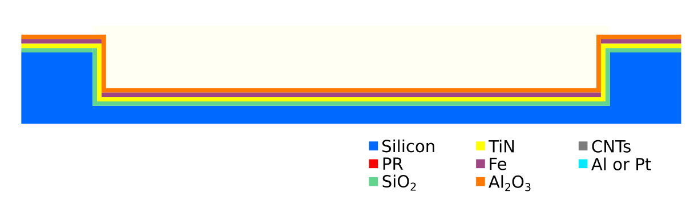
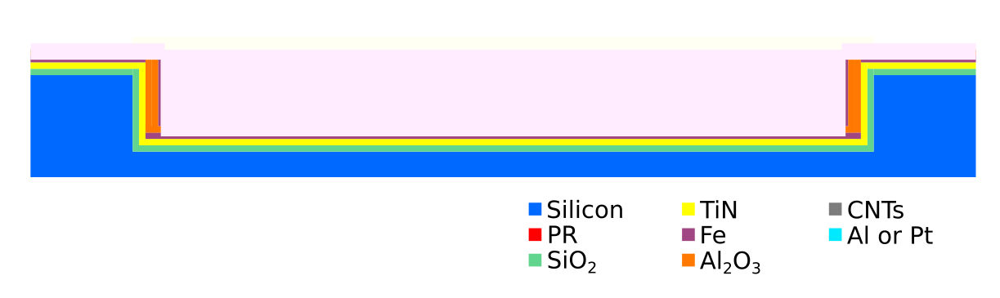
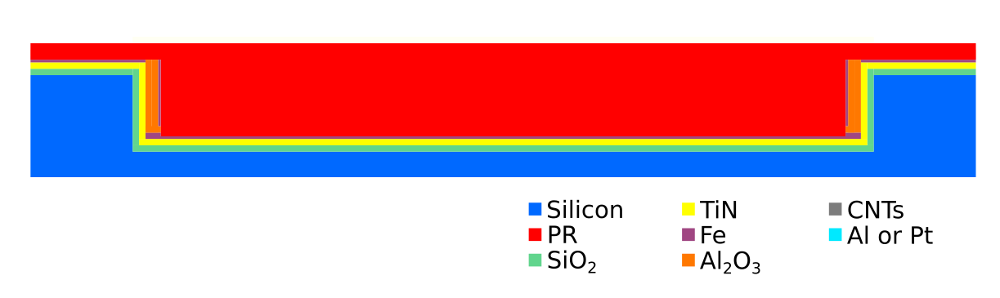
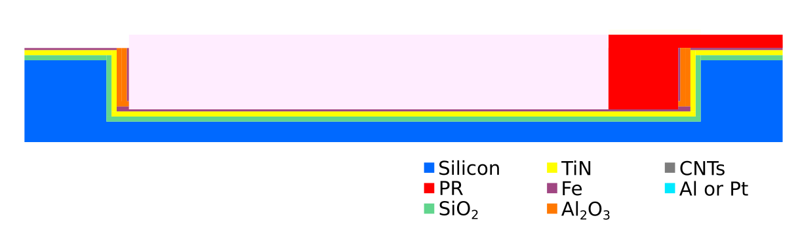
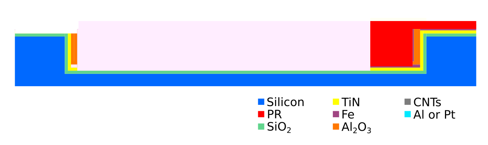
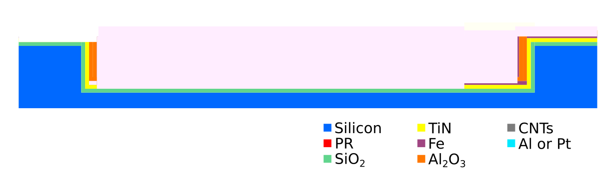
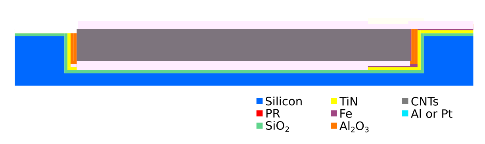
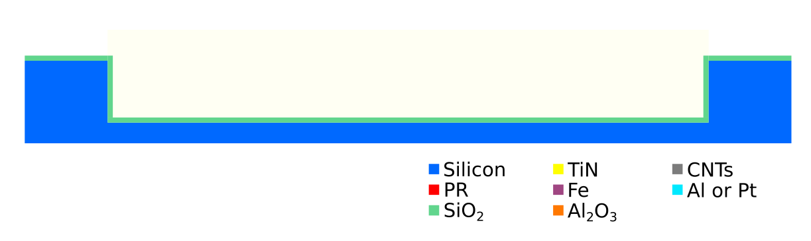
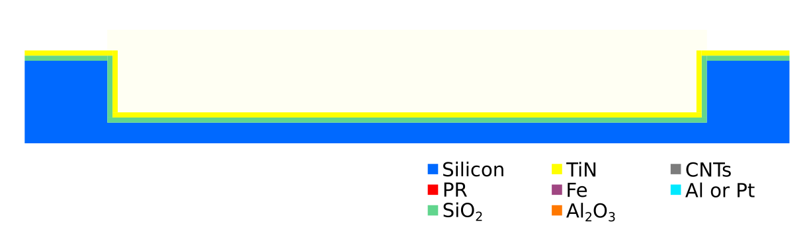
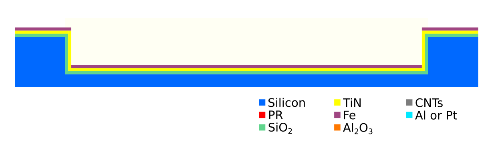
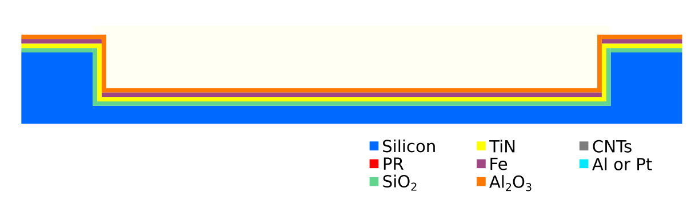
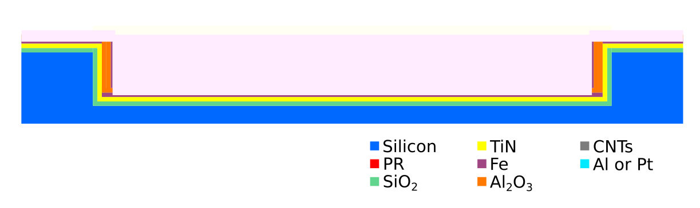
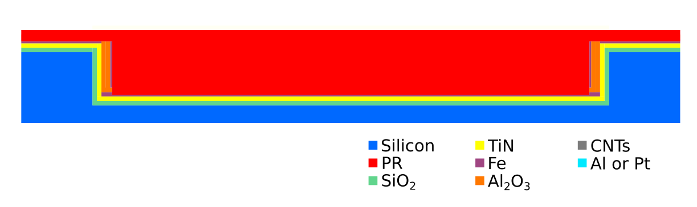
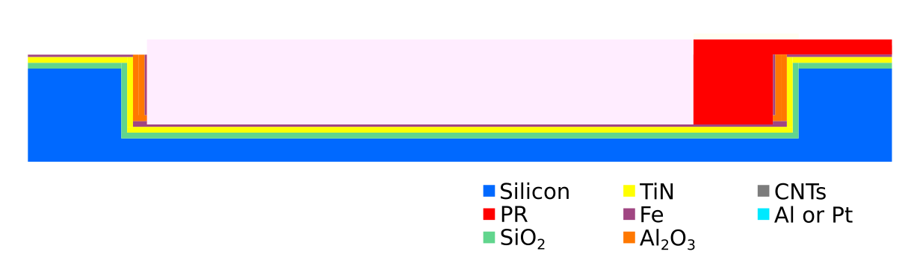
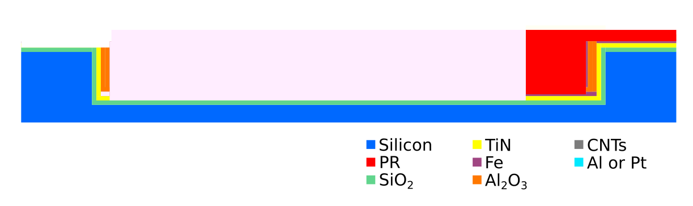
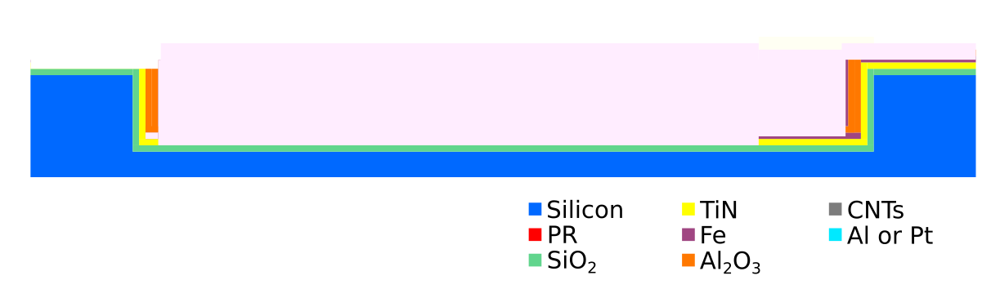
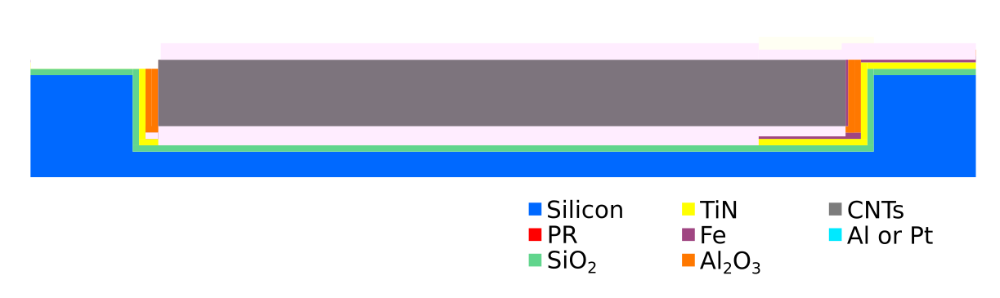
Silicon test wafers stock-out
PR coating
Photolithography
Si etching
PR stripping
SiO 2 growth
TiN sputtering
Fe deposition
Al 2 O 3 sputtering
IBE and local redeposition
PR coating
Photolithography
Metal etching
PR stripping
CNTs growth
Process 3
Liquid-induced flipping of CNTs
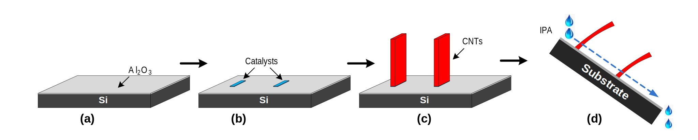The third approach for building horizontal CNTs structures is based on the assembly of vertically grown CNTs structures. This is achieved by liquid-induced flipping of the CNTs bundles on the chip.
Process 3
Feasability assessment
Feasibility of bundle flipping was investigated.
Process 3
Feasability assessment

Process 3
Feasability assessment
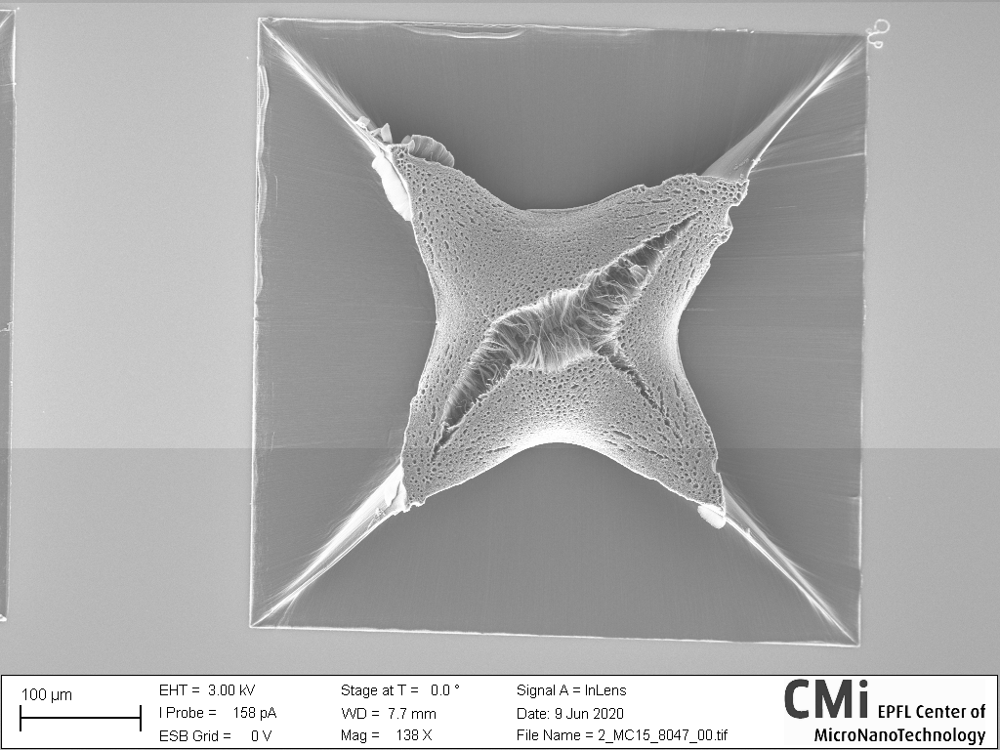Autonomous IoT sensing nodes
Energy harvesting

Autonomous IoT sensing nodes
Energy harvesting system
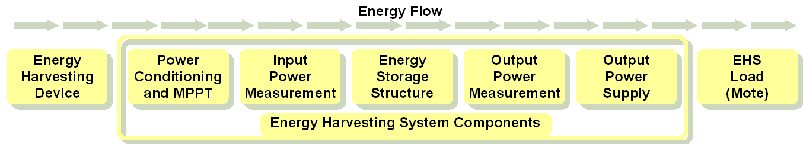This project is about designing the energy storage structure (in our case a supercapacitor).